Chapter 1. 변수¶
'혼자 공부하는 자바 - 신용권' 2장 학습 내용
1절. 변수
2절. 타입
3절. 타입 변환
4절. 변수와 시스템 입출력
1절. 변수¶
메모리(RAM)¶
- 컴퓨터 메모리(RAM)는 값을 저장할 수 있는 수많은 번지(주소)들로 구성
- 메모리의 어디에, 어떤 방식으로 저장할 지 결정해야 프로그램 개발이 쉬움
- 프로그래밍 언어가 변수라는 개념을 사용하는 이유
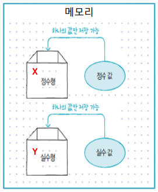
변수(Variable)¶
- 값을 저장할 수 있는 메모리의 특정 번지에 붙여진 이름
- 변수를 통해 해당 메모리 번지에 하나의 값을 저장하고 읽음
- 변수는 정수, 실수 등 다양한 타입의 값을 저장
변수 선언¶
- 변수 사용을 위해서 변수를 선언
- 어떤 타입의 데이터를 저장하는가?
- 변수 이름은 무엇인가?
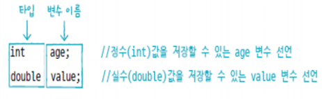
- 같은 타입의 변수는 콤마를 이용해 한꺼번에 선언
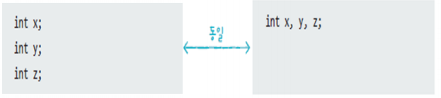
변수 이름¶
- Java에서 정한 작성 규칙
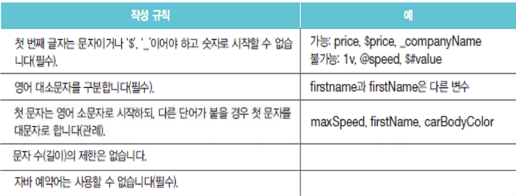
예약어¶
- Java에서 의미를 가지고 사용되는 단어
- 변수 이름으로 사용할 경우 컴파일 에러 발생
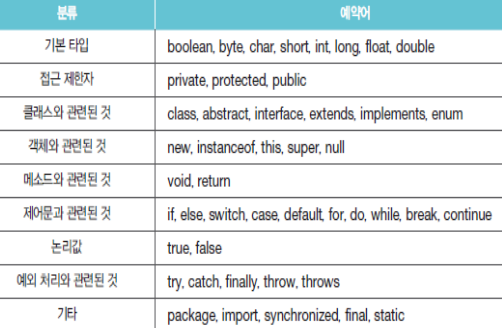
변수 저장¶
- 값을 저장할 경우 대입 연산자 (=) 사용
- 변수 선언 후 대입 연산자를 통해 오른쪽의 값을 왼쪽 변수에 저장
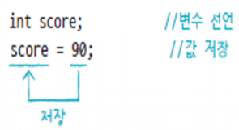
변수 초기화¶
- 변수에 최초로 값이 저장될 때 메모리에 변수가 생성
- 생성되는 변수 : 초기화
- 생성되는 변수의 값 : 초기값
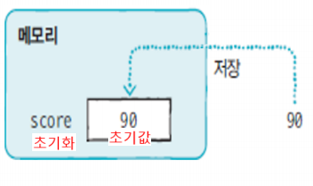
- 초기화를 하지 않은 변수는 메모리에서 값을 읽을 수 없음
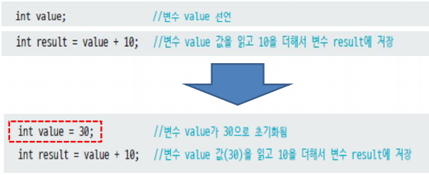
변수 사용¶
- 변수의 값을 이용해서 출력문이나 연산식을 수행
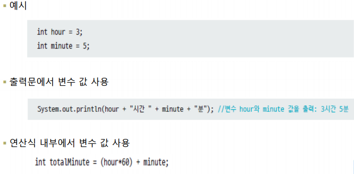
변수 값 복사¶
- 변수의 값을 다른 변수에 저장
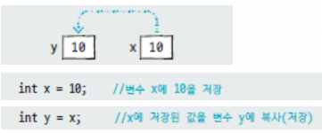
변수 사용 범위¶
- 지역 변수(Local Variable)
- 메소드 블록 내에서 선언된 변수
- 메소드 블록 내에서만 사용되고 실행이 끝나면 자동으로 삭제
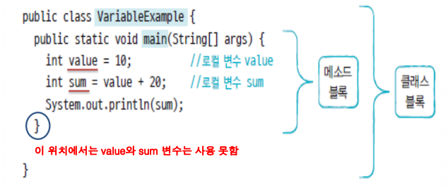
- 지역 변수는 해당 중괄호 블록 내에서만 사용 가능
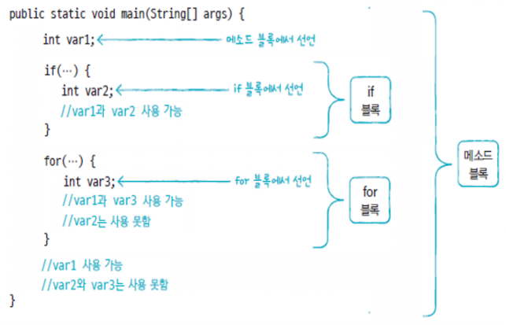
지역 변수 사용 범위 주의할 점¶
- 변수가 어떤 범위에서 사용될 것인지 고려하여 선언 위치를 결정
- 메소드 블록 전체에서 사용하려는 경우 메소드 블록 첫머리에 선언
- 특정 블록 내부에서만 사용하려는 경우 해당 블록 내에 선언
변수 정리¶
| 키워드 | 설명 |
|---|---|
| 변수 | 값을 저장할 수 있는 메모리 번지에 붙인 이름으로 프로그램은 변수를 통해 메모리 번지에 값을 저장하고 읽음 |
| 변수 선언 | 변수에 어떤 타입의 데이터를 저장할 지, 변수의 이름이 무엇인지를 결정 |
| 변수 사용 | 변수의 값을 읽거나 변경하는 것으로 출력문이나 연산식 내부에서 사용되며 변수에 저장된 값을 출력하거나 연산에 사용 |
| 변수 사용 범위 | 변수는 자신이 선언된 위치에서 자신이 속한 블록 내부까지만 사용 가능 |
- 예제 1. 변수 예제
SourceCodeChecking
2절. 타입¶
변수 타입¶
- 타입
-
변수 타입에 따라 변수에 저장할 수 있는 값의 종류와 허용 범위 변화
-
기본 타입(Primitive Type)
- 자바는 정수, 실수, 논리값을 저장하는 총 8개의 기본 타입 보유
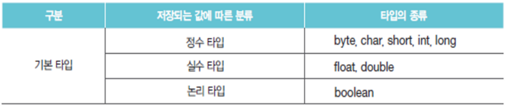
- 정수 타입
- 메모리 사용 크기와 저장되는 값의 허용 범위에 차이 존재
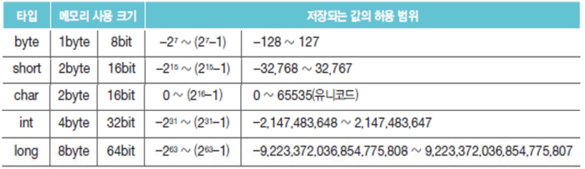
- 메모리
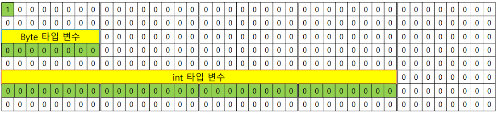
리터럴(literal)¶
- 소스 코드에서 프로그래머에 의해 직접 입력된 값
- 아래의 경우 자바에서 정수로 인식
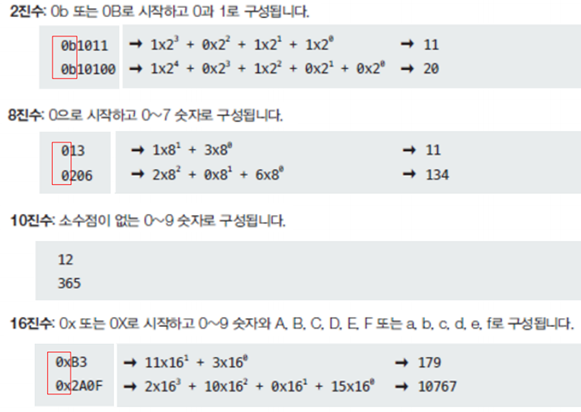
char 타입¶
- 하나의 문자를 저장하는 타입
- ex) 'A', '한'
- 작은 따옴표로 감싼 문자 리터럴은 유니코드로 변환되어 저장
- char 타입은 정수 타입
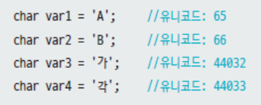
- char는 정수 타입
- 10진수 또는 16진수 형태의 유니코드 저장 가능
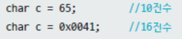
문자열¶
- 큰따옴표로 감싼 문자들
- 문자열은 char 타입이 아닌 String 타입에 저장
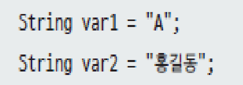
이스케이프 문자(escape)¶
- 문자열 내부의 '\'
-
이스케이프 문자를 통해 특정 문자를 포함시키거나, 문자열의 출력 제어 가능
-
예시 1) 문자열 내부에 " 문자 포함
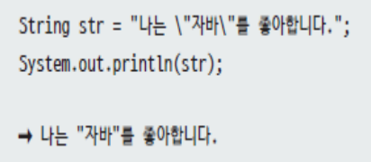
- 예시 2) 문자열 출력 제어
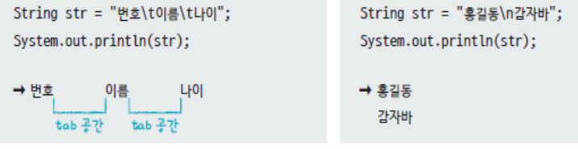
이스케이프 문자 종류¶
| 이스케이프 문자 | 출력 용도 |
|---|---|
| \t | 탭만큼 띄움 |
| \n | 줄 바꿈(라인 피드) |
| \r | 캐리지리턴 |
| \" | " 출력 |
| \' | ' 출력 |
| \\ | \ 출력 |
| \u16진수 | 16진수 유니코드에 해당하는 문자 출력 |
실수 타입¶
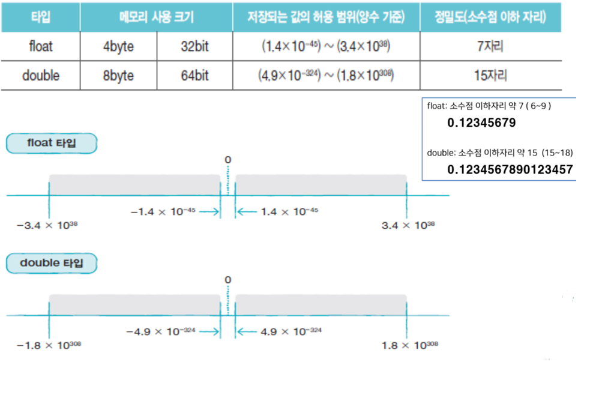
실수 리터럴¶
-
소스 코드에서 소수점 있는 리터럴은 10진수 실수로 인식
0.25, -3.14
-
알파벳 e 또는 E가 포함된 숫자 리터럴은 지수 및 가수로 표현된 소수점 있는 10진수 실수로 인식
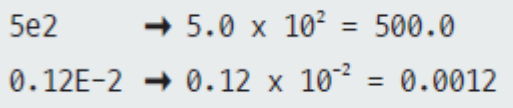
double 타입¶
- double 타입 변수에 저장
- Java는 실수 리터럴을 기본적으로 double 타입으로 해석
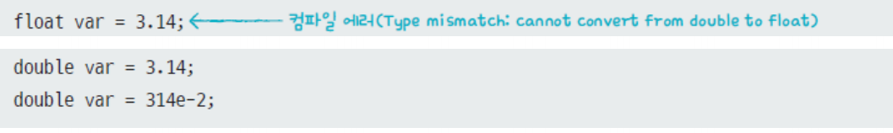
float 타입¶
- float 타입 변수에 저장
- 리터럴 뒤 f 혹은 F를 붙여 float 타입 표시
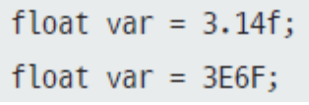
실수 타입의 범위¶
- double 타입이 float 타입보다 2배 가량 정밀도 높아 정확한 데이터 저장 가능
- float : 소수점 이하자리 약 7 (6 ~ 9) > 0.12345679
- double : 소수점 이하자리 약 15 (15 ~ 18) > 0.1234567890123457
논리 타입¶
- 참(true)과 거짓(false)에 해당하는 리터럴을 저장하는 타입
- 두 가지 상태값에 따라 제어문의 실행 흐름을 변경할 때 사용
타입 정리¶
| 키워드 | 설명 |
|---|---|
| 정수 타입 | 정수를 저장할 수 있는 byte, short, int, long과 같은 타입 |
| char 타입 | 작은따옴표(')로 감싼 하나의 문자 리터럴을 저장하는 타입 |
| String 타입 | 큰따옴표(")로 감싼 문자열을 저장하는 타입 |
| 실수 타입 | 실수를 저장할 수 있는 float, double와 같은 타입 |
| boolean 타입 | 참과 거짓을 의미하는 true와 false를 저장할 수 있는 타입 |
- 예제 2. 타입 예제
SourceCodeChecking
3절. 타입 변환¶
타입 변환¶
- 데이터 타입을 다른 데이터 타입으로 변환하는 것
- 변수 값을 다른 타입의 변수에 저장할 때 발생
자동 타입 변환(promotion)¶
- 값의 허용 범위가 작은 타입이 큰 타입으로 저장될 경우
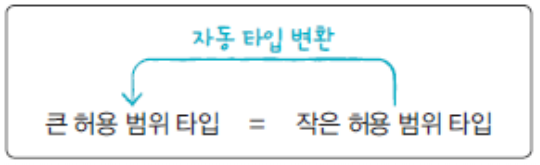
- 기본 타입의 허용 범위 순서
- byte < short < int < long < float < double
byte byteVal = 10;
int intVal = byteVal;
// 자동 타입 변환
long longVal = 5000000000L;
float floatVal = longVal; // 5.0E9f로 저장
double doubleVal = longVal; // 5.0E9로 저장
- char 타입의 경우
- int 타입으로 자동변환되면 유니코드 값이 int 타입에 저장
char charVal = 'A';
int intVal = charVal;
// 65 저장
byte byteVal = 65;
char charVal = byteVal;
// 컴파일 에러
// Why? byte에서 char로의 변환 == 손실이 있는 변환
강제 타입 변환(casting)¶
- 큰 허용 범위 타입을 작은 허용 범위 타입으로 강제로 나누어 한 조각만 저장
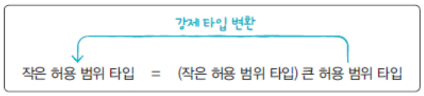
- 캐스팅 연산자 괄호 () 사용
- 괄호 안이 나누는 단위
- ex 1) int 타입을 char 타입으로 강제 변환
- 문자 출력 목적
- ex 2) 실수 타입을 정수 타입으로 강제 변환
- 소수점 이하 부분은 버려지며 정수 부분만 저장
정수 타입 변수¶
- 정수 타입 변수가 산술 연산식에서 피연산자로 사용되는 경우
- byte, char, short 타입 변수는 int 타입으로 자동 변환
- 특별한 경우가 아니라면 정수 연산에 사용하는 변수는 int 타입으로 선언
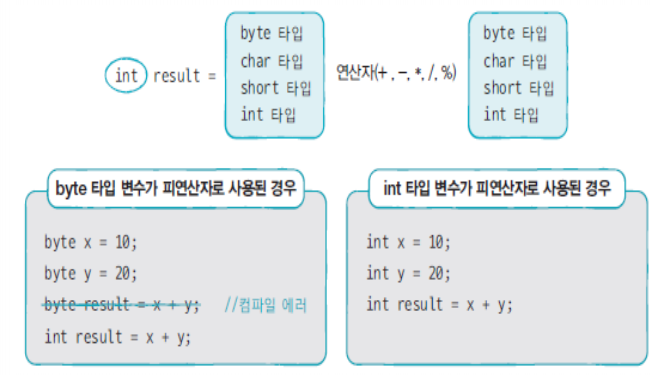
- 피연산자 중 하나가 long 타입이면 다른 피연산자는 long 타입으로 자동 변환
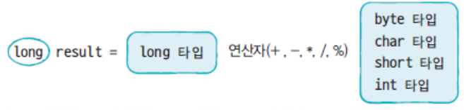
실수 타입 변수¶
- 피연산자 중 하나가 double 타입일 경우 다른 피연산자는 double 타입으로 자동 변환
int intVal = 10;
double doubleVal = 5.5;
double res = intVal + doubleVal; // res에 15.5 저장
// res, intVal, doubleVal은 모두 double 값으로 변환
int intVal2 = 10;
double doubleVal2 = 5.5;
int res2 = intVal2 + (int) doubleVal2; // res2에 15 저장
// doubleVal2를 int형으로 강제 타입 변환
- 실수 리터럴 연산
정수 연산의 결과를 실수로 저장할 때 주의할 점¶
- 정수 연산의 결과는 정수
int x = 5;
int y = 2;
double res = x / y;
System.out.println(res);
// 출력 예시
// 2.0
// (5 / 2)는 2.5로 나타낼 수 있음에도 정수끼리의 연산 결과는 정수가 나옴
```
* 실수 결과를 얻으려면 실수 연산으로의 변환 필요
* 하나의 정수 혹은 둘 모두를 (double)을 이용해서 강제 타입 변환 진행

#### + 연산
* 피연산자가 모두 숫자일 경우 덧셈 연산
* 피연산자 중 하나가 문자열일 경우 나머지 피연산자도 문자열로 자동 변환
* 그 후 문자열 결합 연산

* '+ 연산'은 앞에서부터 순차적으로 수행
* 먼저 수행된 연산이 결합 연산인 경우 이후 모든 연산은 결합 연산

#### 기본 타입
* 문자열을 기본 타입으로 강제 변환

* 숫자 형식 예외 발생
* 숫자 타입 변환 시도할 경우
* 문자열이 숫자 외 요소를 포함할 경우
```Java
String str = "1a";
int Val = Integer.parseInt(str);
// NumberFormatException 발생
- String.valueOf() 메소드를 사용하여 기본 타입을 문자열로 변환
타입 변환 정리¶
| 키워드 | 설명 |
|---|---|
| 자동 타입 변환 | 자동으로 타입이 변환되는 것으로 값의 허용 범위가 작은 타입이 허용 범위가 큰 타입으로 저장될 때 발생 |
| 강제 타입 변환 | 강제로 타입을 변환하는 것으로 값의 허용 범위가 큰 타입을 허용 범위가 작은 타입으로 쪼개서 저장할 때 발생 |
| 문자열 결합 연산 | 문자열과 + 연산을 하면 다른 피연산자도 문자열로 변환되어 문자열 결합 발생 |
| Integer.parseInt() | 문자열을 정수 int 타입으로 변환 |
| Double.parseDouble() | 문자열을 실수 double 타입으로 변환 |
- 예제 3. 타입 변환 예제
SourceCodeChecking
4절. 변수와 시스템 입출력¶
System.out¶
- 시스템의 표준 출력 장치로 출력
System.in¶
- 시스템의 표준 입력 장치에서 읽음
println()¶
- 괄호 안의 문자열이나 변수를 출력하는 메소드
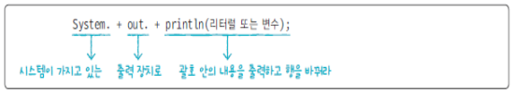
여러가지 출력 메소드¶
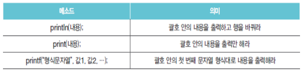
printf()¶
- 형식화된 문자열(formal string) 출력
- 전체 출력 자릿수 및 소수 자릿수 제한
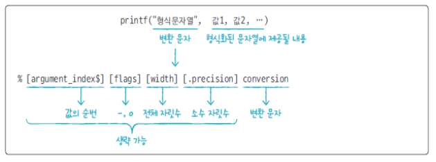
- 형식 문자열에서 %와 conversion 외에는 모두 생략 가능
- conversion에는 제공되는 값의 타입에 따라 d(정수), f(실수), s(문자열) 입력
System.out.printf("이름 : %s\n", "방윤서");
System.out.printf("나이 : %d", 22);
// 출력 예시
// 이름 : 방윤서
// 나이 : 22
- 형식 문자열에 포함될 값이 2개 이상인 경우 순번표시
- 다양한 형식 문자열
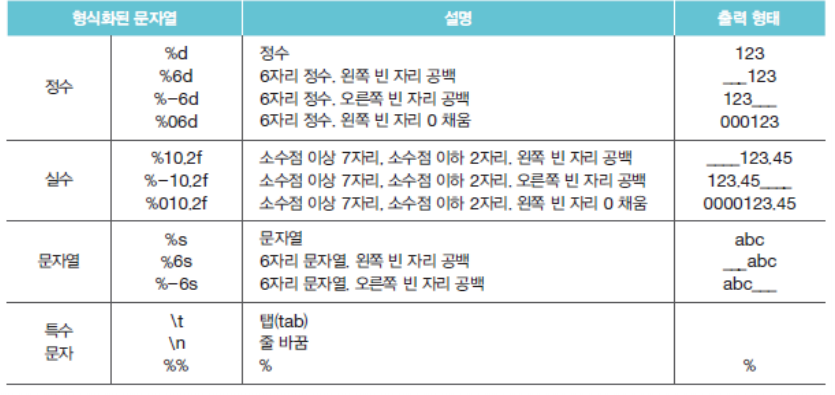
키 코드(Key Code)¶
- 키보드에서 키를 입력할 때 프로그램에서 숫자로 된 키 코드를 읽음
- System.in의 read() 사용
- 얻은 키코드는 대입 연산자 사용하여 int 변수에 저장
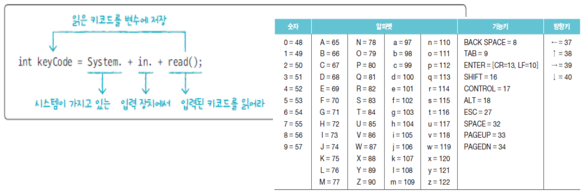
System.in.read()의 단점¶
- 2개 이상 키가 조합된 한글 읽기 불가능
- 키보드로 입력된 내용을 통문자열로 읽기 불가능
Scanner로 해결¶
- Java가 제공하는 Scanner 클래스를 통해 입력된 통문자열 읽기 가능
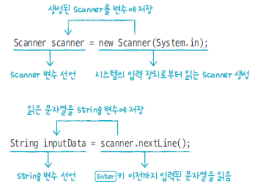
기본 타입의 값과 문자열 비교¶
- 기본 타입의 값 비교
- '=='를 사용
-
예시
- int x = 5;
- booleaan res = (x == 5);
-
문자열의 비교
- 'equals()' 함수 사용
- 예시
- String str1 = "Java";
- boolean res1 = str.equals("java"); --> FALSE
- boolean res2 = str.equals("Java"); --> TRUE
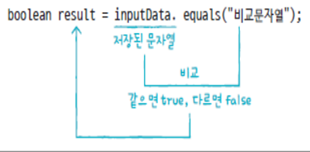
변수와 시스템 입출력 정리¶
| 키워드 | 설명 |
|---|---|
| System.out.println() | 괄호에 주어진 매개값을 모니터로 출력 하고 개행 |
| System.out.print() | 괄호에 주어진 매개값을 모니터로 출력만 하고 개행 X |
| System.out.printf() | 괄호에 주어진 형식대로 출력 |
| System.in.read() | 키보드에서 입력된 키 코드를 읽음 |
| Scanner | 키보드로부터 입력된 내용을 통 문자열로 쉽게 읽기 위해서 Scanner 사용 |
- 예제 4. 변수와 시스템 입출력 예제
SourceCodeChecking